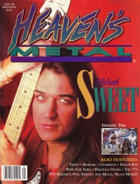

Michael Sweet
|  |
| March 1994 Heaven's Metal |
 |
| February 1996 HM |
 |
| February 2007 Heaven's Metal |
| February 2018 Metalbreed |
Media coverage:
- Apr 1986 in HIS "Scene & Heard: Invasion of the Bible Flingers", by Diana Lynne Pavlac
- 31 Aug 1988 in Circus "Michael Sweet revs up for Stryper's new crusade", by Moria McCormick
- Jun 1992 in CCM "In The News: Michael Sweet Leaves Stryper", by Brian Quincy Newcomb
- Spr 1994 in True Tunes News "Michael Sweet"
- Mar 1994 in Heaven's Metal "How Sweet It Is", by David Muttillo
- Mar 1994 in The Lighthouse "Michael Sweet", by J. Warner Soditus
- Mar 1994 in Heaven's Metal "The State of Christian Metal"
- May 1994 in Syndicate "No More Mr. Pretty", by Kevin Allison
- Jun 1994 in CCM "The Return of Michael Sweet", by Perucci Ferraiuolo
- Sep 1994 in Heaven's Metal "Concert Review: Michael Sweet (opening for Audio Adrenaline, dc Talk)", by Brian Rodgers
- Jan 1995 in CCM "In The News: Sweet Accuses MTV of Banning Abstinence Video"
- Jan 1995 in Heaven's Metal "Concert Review: Michael Sweet", by Doug Van Pelt
- May 1995 in Heaven's Metal "Stryper Salute"
- Nov 1995 in CCM "Sweet Release: Will The Real Michael Sweet Please Stand Up?", by Todd Chatman
- Feb 1996 in HM "Sweet's Sophomore Season", by Doug Van Pelt
- Feb 1996 in HM "Mike's Gear"
- Jul 1996 in Campus Life "Bitter Sweet No More", by Chris Lutes
- Aug 1998 in CCM "Talent Pool: Indies: Turnbull, Jordan's Creed, Brandtson, Michael Sweet", by Thom Granger
- Nov 1998 in HM "D.I.Y.: Michael Sweet"
- Sep 1999 in HM "Concert Review: The Rock Summer Festival"
- Nov 2000 in HM "Robert Sweet Interviews Michael Sweet", by Robert Sweet
- Oct 2003 in CCM "News Item: Michael Sweet Records New Hymns Album", by David McCreary
- Aug 2006 in CCM "Insider: 'Tis So Sweet", by Kristi Henson
- Feb 2007 in Heaven's Metal "H-I-M", by Chris Beck
- Nov 2013 in HM "Heaven's Metal: S T R Y P E R", by Doug Van Pelt
- 15 May 2014 in CCM Digital "His Strypes are Showing", by Andy Argyrakis, Matt Conner
- Jun 2014 in HM "The Jump: Books: Honestly: Sweet pulls back the curtain on Stryper and his demons", by Jeff McCormack
- 15 Oct 2016 in CCM Digital "A view from the One Sided War battle lines", by Andy Argyrakis
- Oct 2017 in Metalbreed "Amplio Espectro: Honestly: My Life and Stryper Revealed"
- Feb 2018 in Metalbreed "Michael Sweet", by Claudia Saavedra
Albums & reviews:
1992: Unstryped
1993: 4-song demo
1993: 4-song demo
- Sep 1993 in Heaven's Metal, by David Muttillo
- Feb 1994 in The Lighthouse, by Clarke Woodfin
- Mar 1994 in Heaven's Metal, by Doug Van Pelt
- Apr 1994 in Campus Life
- Apr 1994 in CCM, by Bruce A. Brown
- May 1994 in Syndicate, by Arsenio Orteza
- Win 1995 in YouthWorker, by Rick Chomey
- Sep 1995 in HM, by Doug Van Pelt
- Oct 1995 in CCM, by Devlin Donaldson
- May 1996 in YouthWorker, by Rick Chomey
- Nov 2000 in HM, by Doug Van Pelt
- May 2001 in YouthWorker, by Dave Urbanski
- Aug 2003 in Nor'Easter, by Chris Gatto
- Oct 2006 in Heaven's Metal, by Chris Beck
- Mar 2007 in HM
- Apr 2014 in HM, by Jeff McCormack
- 15 May 2014 in CCM Digital, by Andy Argyrakis
- 15 Aug 2016 in CCM Digital, by Andy Argyrakis
Award Summary (Nominations / Wins)
Dove Awards- 1995 Dove Awards
- New Artist
- Rock Album: Michael Sweet
- Rock Recorded Song: "All This and Heaven, Too"
- Rock Album: Real
- 1995 Billboard Music Video Awards
- Best New Artist Clip, Contemporary Christian: "Ain't No Safe Way"
Books
- 2014: Honestly: My Life and Stryper Revealed
Books about Michael Sweet
- "Michael Sweet" in The Encyclopedia of Contemporary Christian Music (Mark Allan Powell, 2002)
Published articles:
© 2011 CMnexus. Last updated April 2021. Contact: editor -AT- cmnexus -DØT- org About